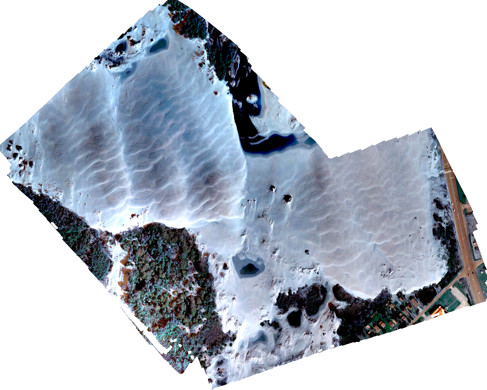
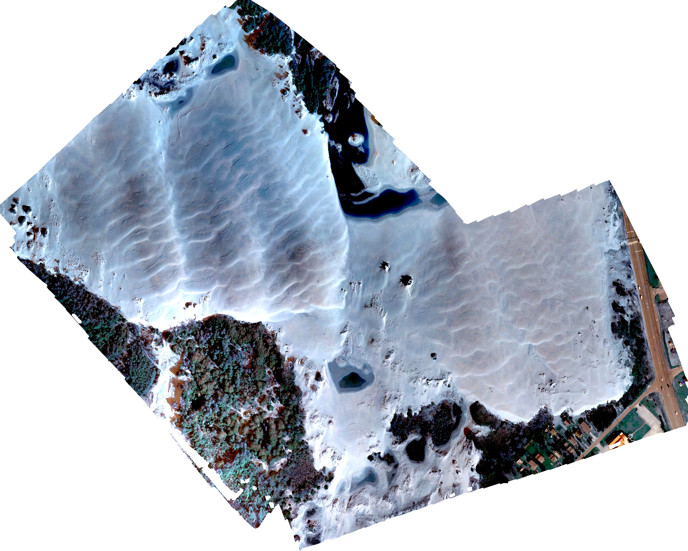
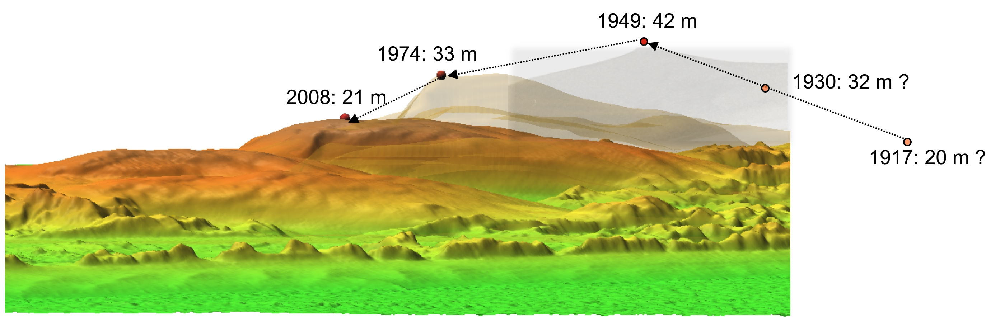
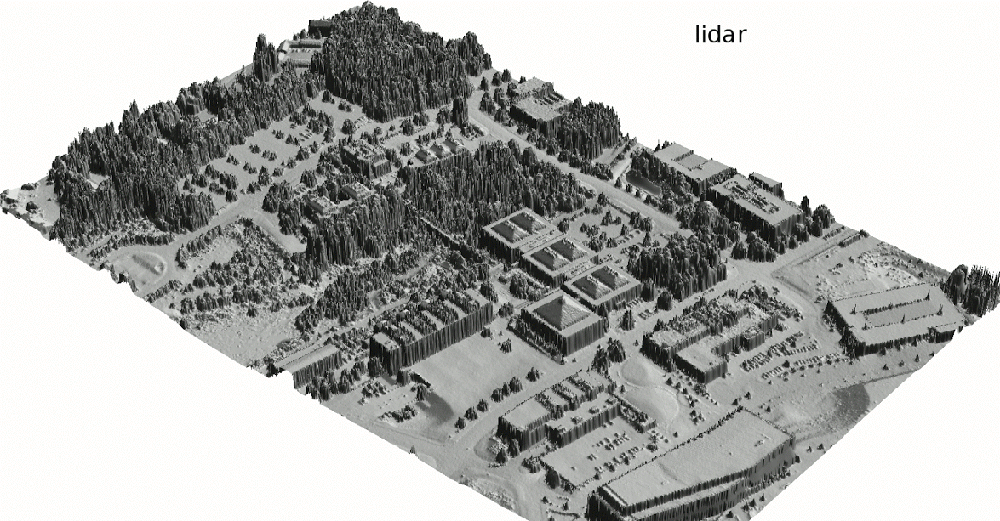
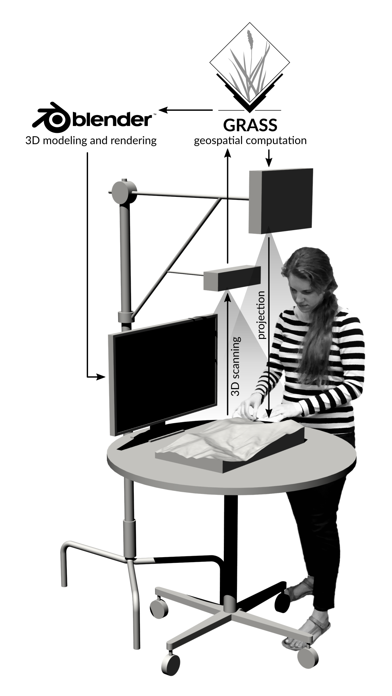

Exploring changing landscapes with dynamic visualizations and tangible interaction
Helena Mitasova


A. Petrasova, V. Petras, B. Harmon, P. Tabrizian, J. Jeziorska


Jockey's Ridge 1974 - 2017: modeling and analysis from multitemporal lidar and UAS data

 

Space-Time cube visualization: evolution of a 16m and 20m contour is represented as isosurface
Contours capture the landform change but they are hard to read. DEM time series is stacked into space-time voxel model and evolution along a contour is represented as isosurface 16m
16m
 20m
20m


Jockey's Ridge story: The 43 m high dune was a transient landform, transitioned between forest and active dunes over the past 2000 years



Dune in early 1900 and in 2008, 2016
Modeling surface water flow at high resolutions using lidar and UAS acquired data
Challenging problem: complex, noisy surfaces, many real nested depressions. Monte Carlo path sampling: robust stochastic method based on duality of particles and fields.


Vegetation structure from multiple return lidar: Generalized Fragmentation Index derived from 3D grid point counts, slicing through fragmentation index voxel model


Petras, V., D. J. Newcomb, and H. Mitasova. 2017. Generalized 3D fragmentation index derived from lidar point clouds. In: Open Geospatial Data, Software and Standards 2(9). DOI 10.1186/s40965-017-0021-8
Urban topography: Solar radiation during summer and winter solstice, Centennial Campus, derived from lidar-based 0.5 m resolution DSM


Urban topography: updating lidar-based DSM using rapid mapping with UAS


Tangible Landscape: Bringing people together around GIS, designed to make working with geospatial data and simulations engaging, and fun



Tangible Landscape for communities: Storm surge protection game and actual flooding after Florence


Petrasova, A. et al. (2018). Tangible Modeling with Open Source GIS. Second edition. Springer International Publishing. https://doi.org/10.1007/978-3-319-89303-7
Open Science: Developing open source software and contributing to OSGeo projects
GRASS GIS https://grass.osgeo.org/, Tangible Landscape tangible-landscape.github.io
Open access educational material: https://geospatial.ncsu.edu/geoforall/courses.html